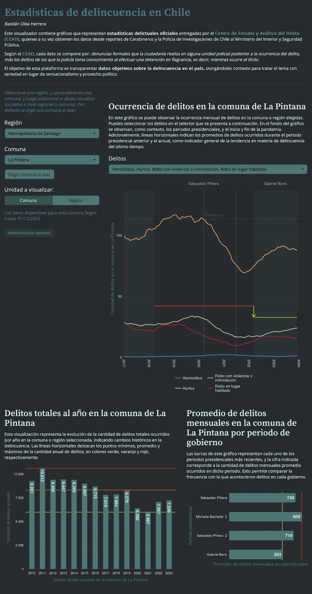
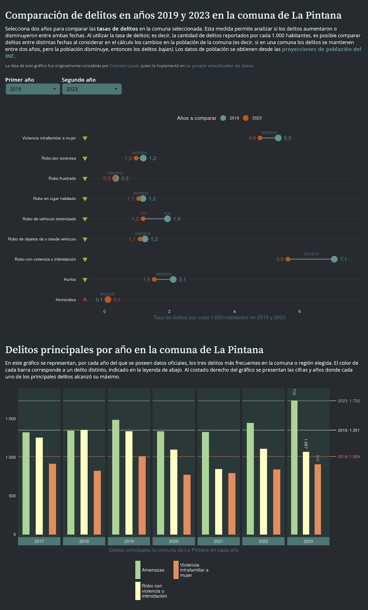

App: Estadísticas de delincuencia en Chile
Visualizador interactivo de datos oficiales sobre delincuencia
10/7/2024
En este visualizador web se presentan gráficos con datos estadísticas delictuales entregadas por el Centro de Estudio y Análisis del Delito (CEAD), quienes a su vez obtienen los datos desde reportes de Carabineros y la Policía de Investigaciones de Chile al Ministerio del Interior y Seguridad Pública.
Según el CEAD, cada dato de delito se compone por: denuncias formales que la ciudadanía realiza en alguna unidad policial posterior a la ocurrencia del delito, más los delitos de los que la policía toma conocimiento al efectuar una detención en flagrancia, es decir, mientras ocurre el ilícito.
El objetivo de esta plataforma es transparentar datos objetivos de la delincuencia en el país, otorgándoles contexto para tratar el tema con seriedad en lugar de sensacionalismo y provecho político.
La aplicación web está disponible en shinyapps.io, o bien, puedes clonar este repositorio en tu equipo para usarla por medio de RStudio.

Datos
Los datos se obtuvieron directamente desde CEAD haciendo uso de
técnicas de web scraping en R, detalladas en este tutorial.. En este repositorio, el script obtener_datos_delincuencia.R realiza el scraping del sitio web de CEAD para los años y comunas que se le indique, y guarda los datos crudos (las tablas en formato html). Luego, el script procesar_datos_delincuencia.R carga estos datos crudos y los transforma a tablas, las limpia, y guarda los datos en formato parquet para lectura rápida, y en formato csv para compatibilidad. No se puede guardar en formato Excel porque tiene más de un millón de filas.
Los datos limpios están disponibles en la carpeta datos_procesados.
Descargar datos
La base de datos de delitos denunciados en Chile del Centro de Estudio y Análisis del Delito (CEAD), obtenida, ordenada y limpiada mediante el código de este repositorio, se encuentra disponible en formato .parquet
en este enlace.
Nota: los datos ya no están disponibles en formato .csv, porque la cantidad de observaciones aumentó y el archivo resultante pesaba más de 100 megas. En comparación, el formato .parquet, que es más eficiente y rápido, pesa sólo 1.1MB.

Actualizaciones
Actualización 17/12/2024:
- Datos actualizados hasta septiembre de 2024 (máximo disponible en CEAD a la fecha)
- Optimización de aplicación para que use tipografías locales en vez de cargarlas desde Google Fonts
- Se vuelve a usar el paquete
arrowpara cargar los datos, porque es más rápido quenanoparquet. - Correcciones mínimas.
Actualización 03/07/2024:
- Datos actualizados hasta marzo de 2024 (máximo disponible en CEAD a la fecha)
- Actualización del código de scraping para que funcione con la actualización del sitio de CEAD
- Los datos ahora representan casos policiales en vez de solo denuncias. Los casos policiales “consideran las denuncias de delitos que realiza la comunidad en las unidades policiales, más las detenciones que realizan las policías ante la ocurrencia de delitos flagrantes”.
- Se cambia el paquete que carga los datos a
nanoparquet, que tiene menos dependencias quearrow - Se flexibiliza el código de la app para que se adapte a las fechas que vienen en los datos, para facilitar actualizaciones futuras